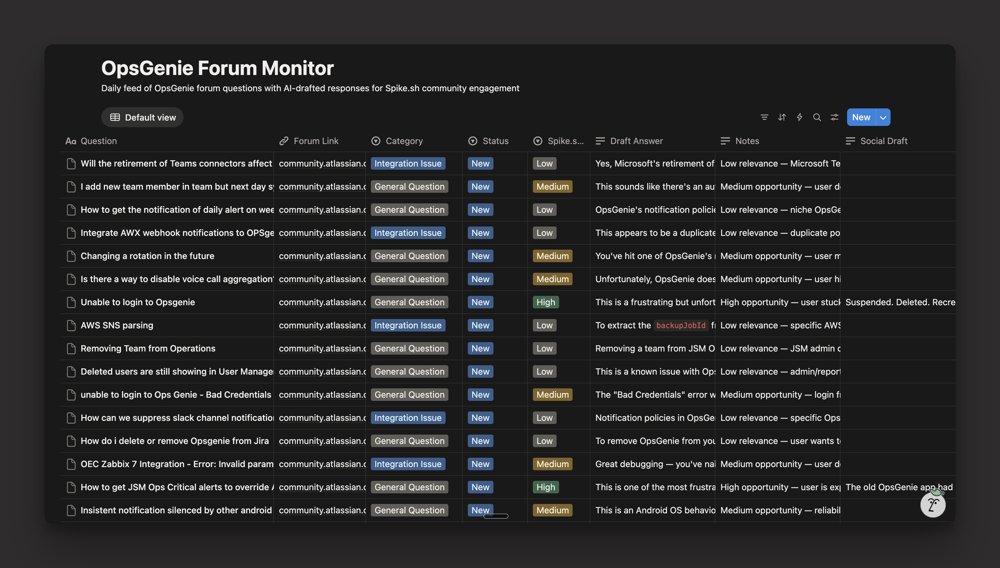

OpsGenie is sunsetting in April 2027. It's a direct competitor to Spike.sh, the product I work on.
Right now, thousands of OpsGenie users are flooding the Atlassian community forum. Questions about migration, broken integrations, account lockouts. All of it.
This is a massive opportunity for us. And I really didn't want to miss it.
So I built a system called "OpsGenie Forum Monitor."

Here's what it does:
1. Scrapes and classifies forum questions.
It pulls recent posts from the forum, tags each one by topic (migration, integrations, billing, etc.), and scores how relevant it is to Spike. High, medium, or low.
2. Drafts helpful forum replies.
Not sales pitches. Genuine answers first. Spike gets mentioned only where it actually makes sense. Not every reply includes us.
(Taking a bet on this until I get banned. If I do, I'll create another account called "Sreekar from Spike.sh" and just answer questions without product plugs.)
3. Generates LinkedIn posts.
It picks up "high relevance" threads and turns them into posts I can share on LinkedIn.
4. Writes a biweekly blog article.
Something like "We analyzed 30 OpsGenie forum posts this week. Here's what teams are struggling with." Good for our SEO and AEO.
5. Identifies community power users.
This one's my favorite.
The system tracks who's posting a lot and who's replying a lot. It builds a profile for each person and sorts them into two buckets:
→ People who ask a lot of questions are frustrated users actively looking for solutions. We're planning to reach out with a Spike trial.
→ People who answer a lot of questions are trusted community voices others already listen to. We're planning to reach out for paid partnerships, get them to try Spike and talk about it. (Not sure how this works yet, but would like to try.)
The entire project lives in my Notion.
Built the whole thing with Claude Code.